| File | # Reads | Lengths | Quality | GC |
|---|---|---|---|---|
| 08_S8_L001_R1_001.fastq | 250,442 | 35 / 150.7 / 151 | 32 / 35.8 / 36 | 25 |
| 08_S8_L001_R2_001.fastq | 250,442 | 35 / 150.8 / 151 | 30 / 35.5 / 36 | 25 |
| File | # Reads | Lengths | Quality | GC |
|---|---|---|---|---|
| 08_S8_L001_R1_001.fastq | 242,183 | 20 / 147.5 / 151 | 35 / 36.2 / 36 | 25 |
| 08_S8_L001_R2_001.fastq | 242,183 | 20 / 146 / 151 | 34 / 36 / 36 | 25 |
Potential Contaminations [%]
Per Base Qualities
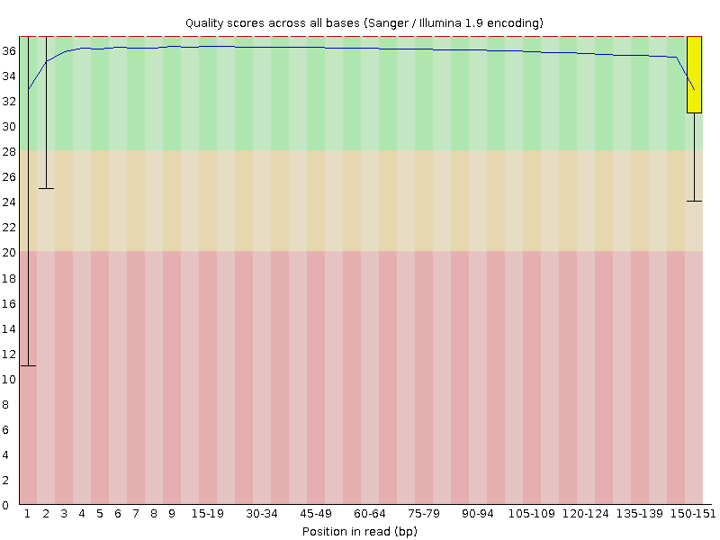
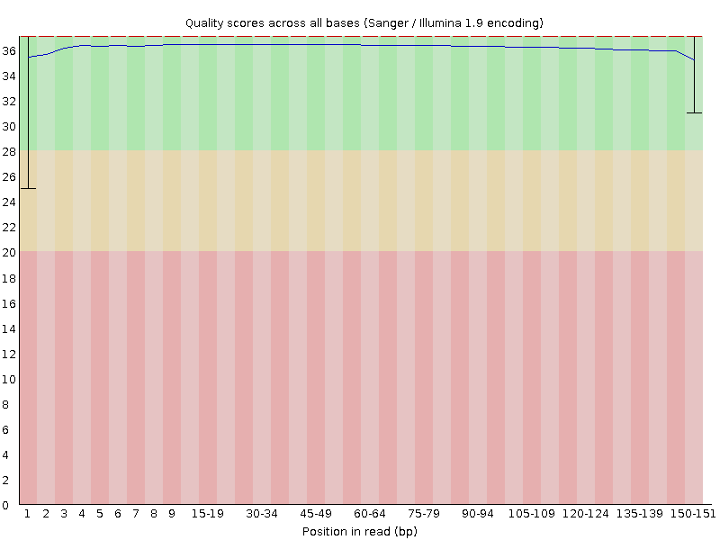
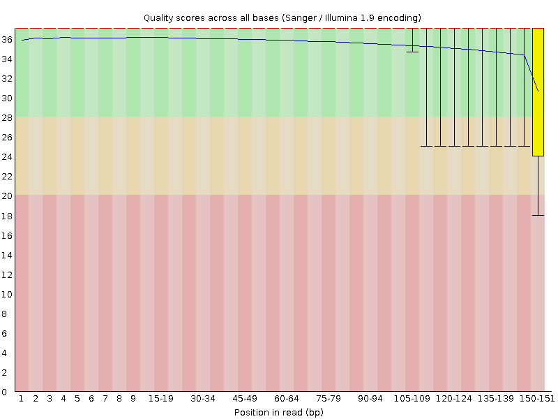
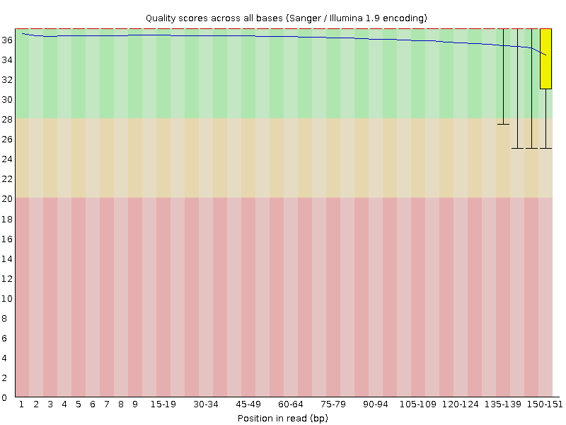
Per Sequence Qualities
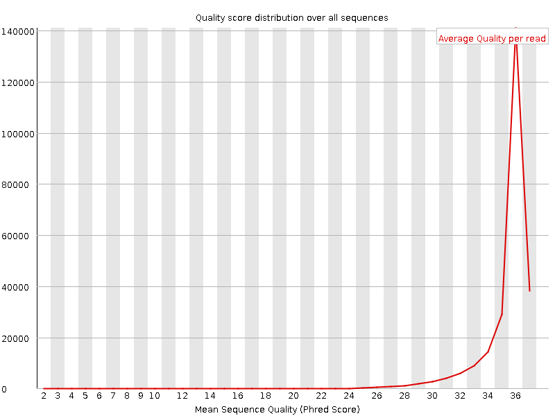
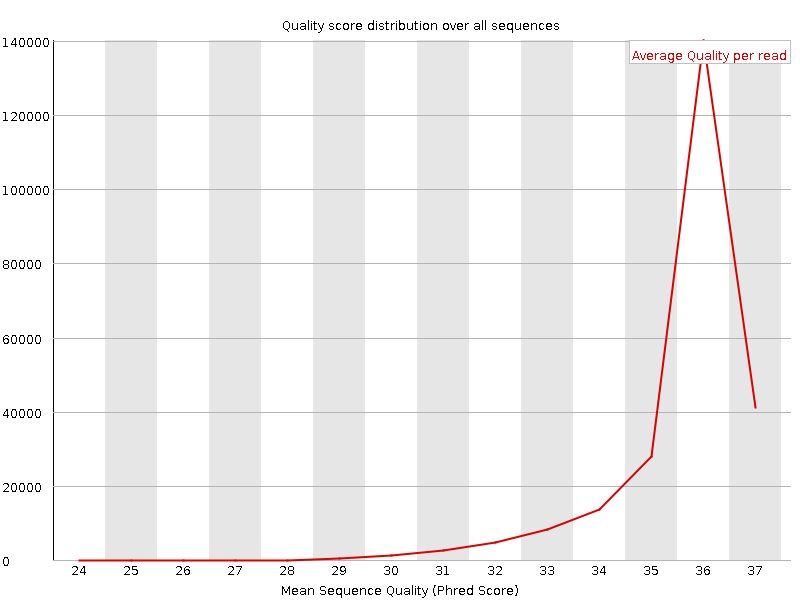
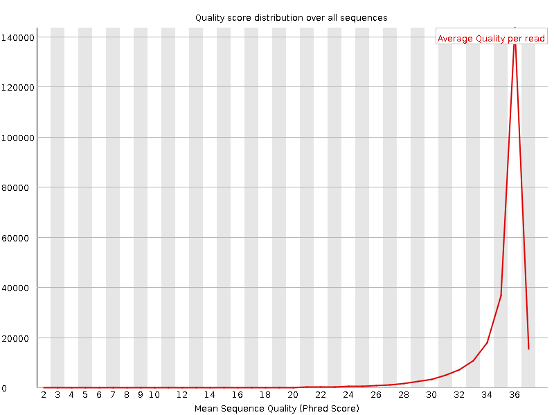
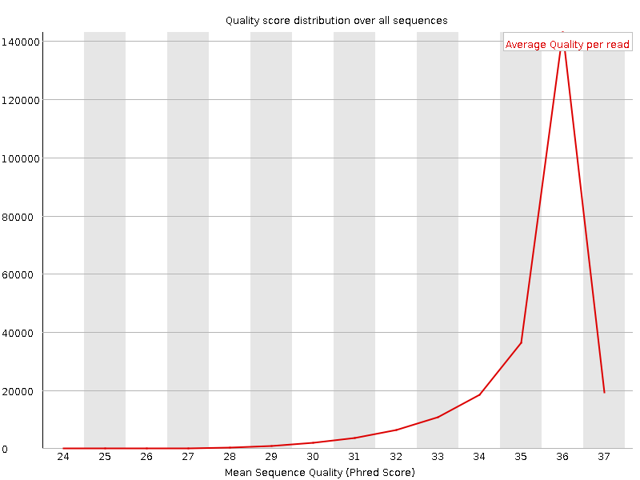
Per Base Sequence Contents
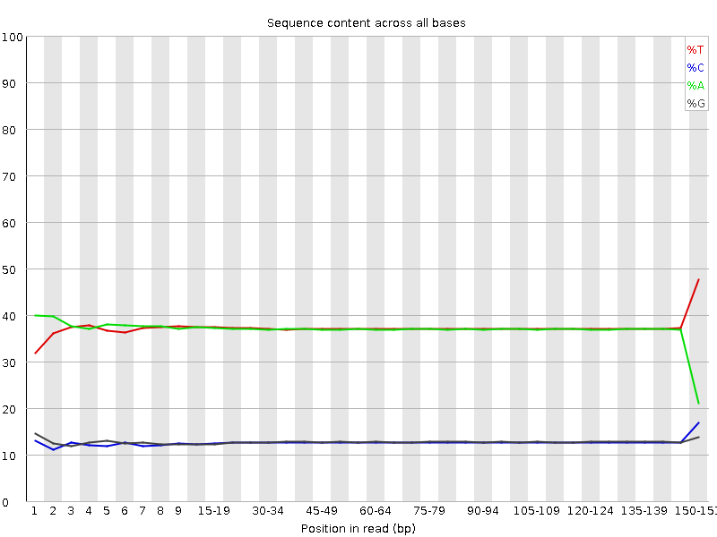
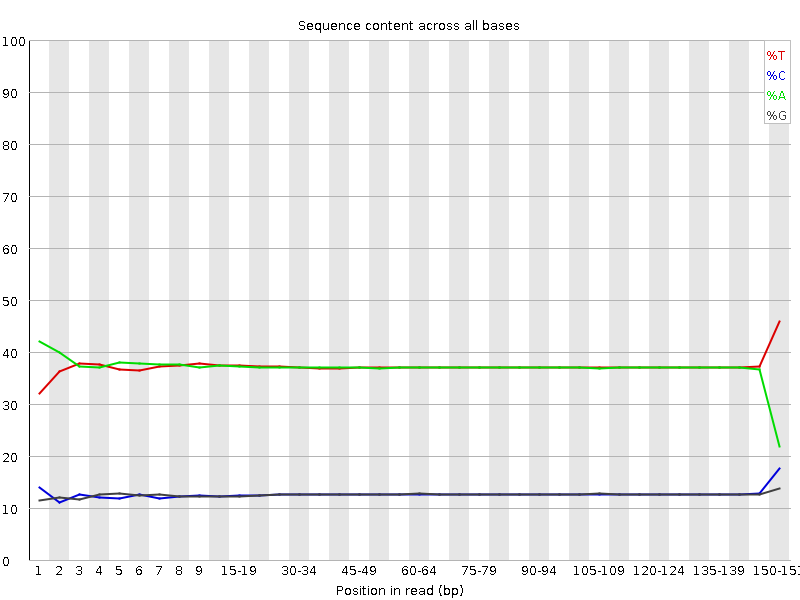
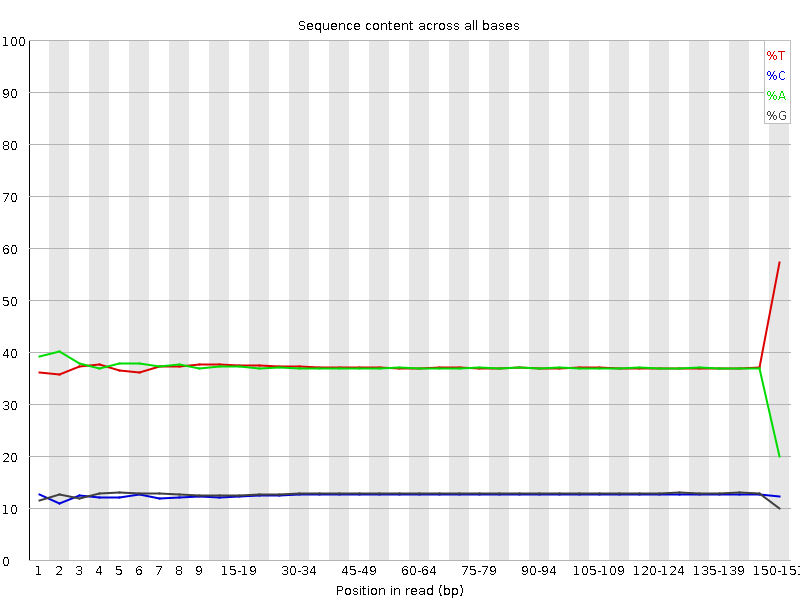
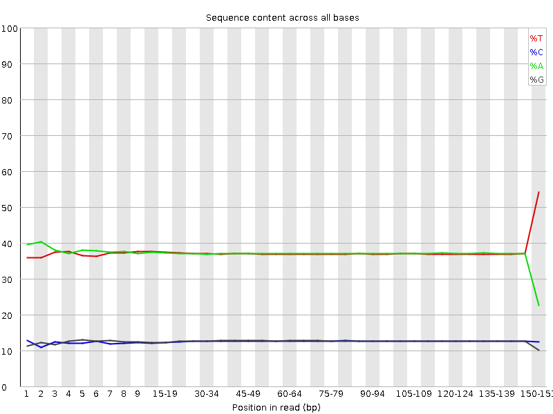
Per Sequence GC Contents
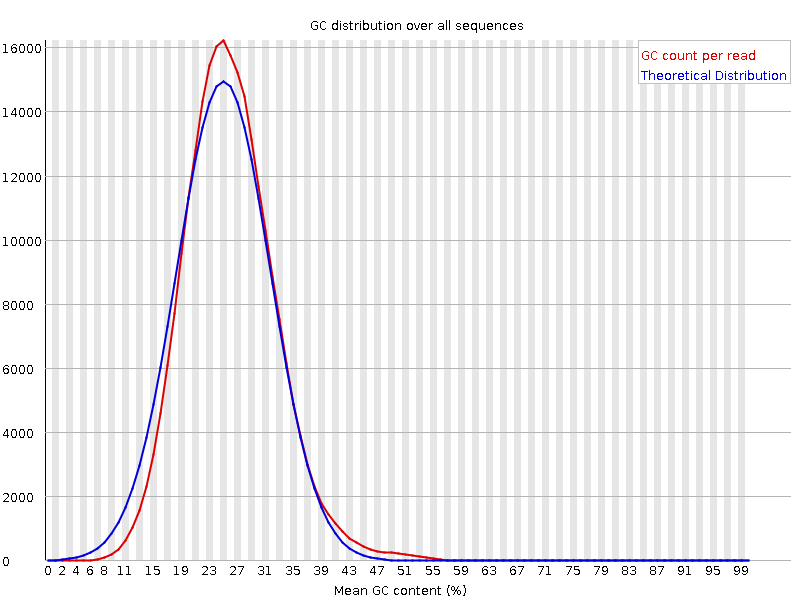
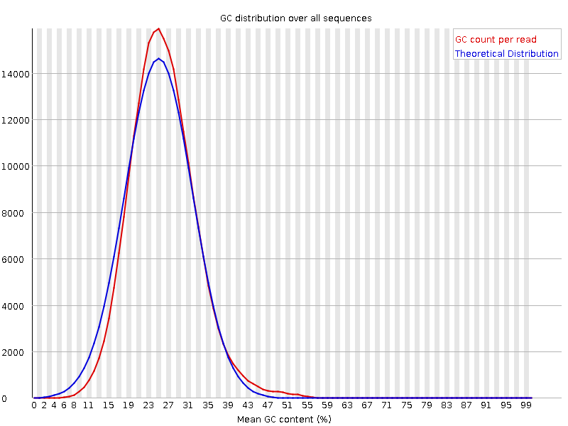
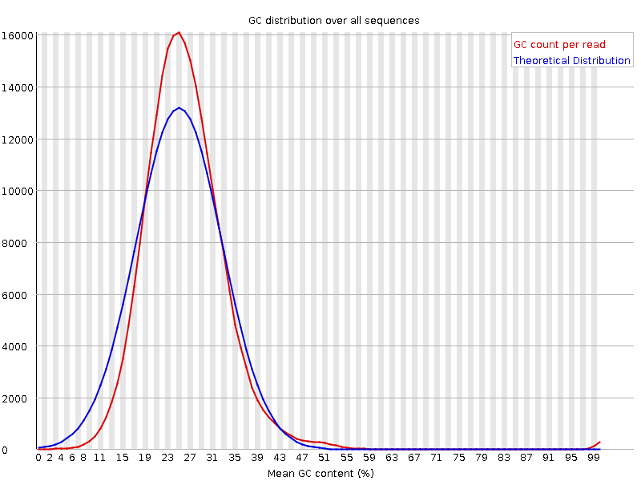
Per Base N Contents
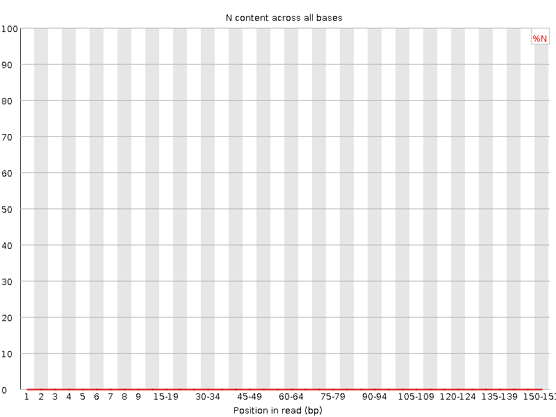


Sequence Length Distributions
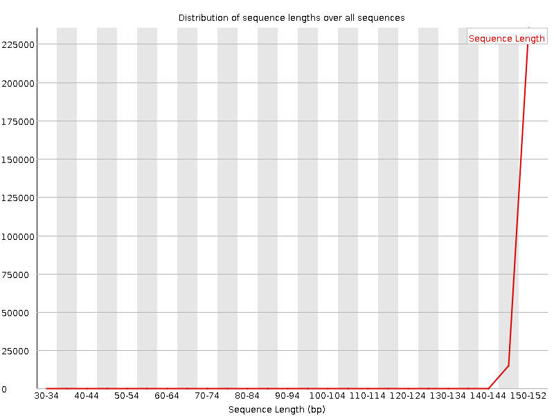
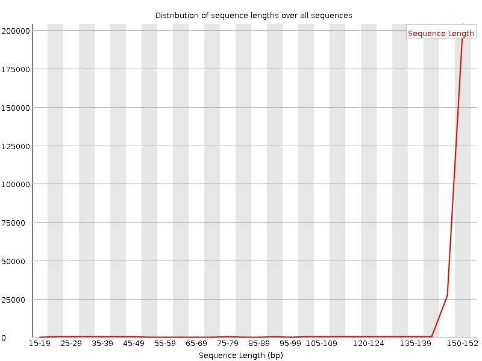
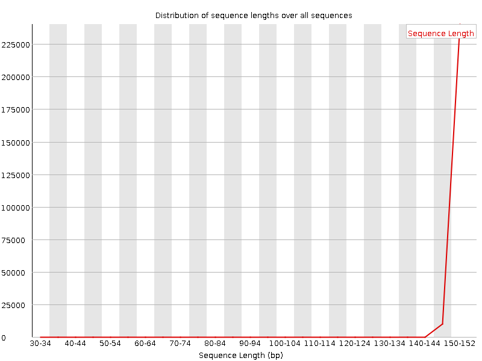
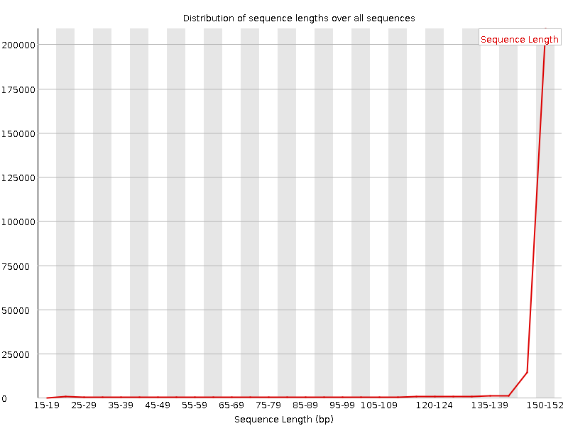